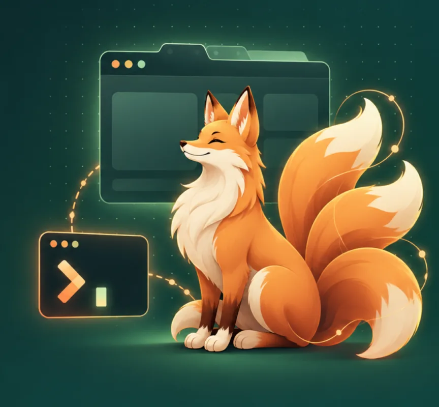

Keep working while the agent works.
Agent-created tabs open in the background. Selecting a tab for the agent doesn't switch the tab you see.
Kitsune connects Claude Code, Codex, Pi and other MCP clients to the Firefox, Zen or LibreWolf browser you already use. Your agent opens its own background tabs while you keep working in yours.
claude mcp add --scope user kitsune -- uvx --from kitsune-browser-mcp kitsune

Why Kitsune
“I built Kitsune after getting tired of switching back to my tab whenever my Playwright setup took focus, and opening Chrome for my agent when I already used a Firefox-based browser.”
Agent-created tabs open in the background. Selecting a tab for the agent doesn't switch the tab you see.
By default, the agent can read your tabs but cannot type, navigate, scroll or close them. It must request a handoff before changing one; you approve and can take it back.
Reuse your existing sessions without opening a separate Chrome browser or installing WebDriver.
6tools
Python for browser actions, plus direct controls for user help and recovery.
Every client runs the same stdio command.
uvx --from kitsune-browser-mcp kitsune
Kitsune is designed to reduce interruptions, not eliminate them: site-opened popups and OS-level trusted input can still move focus. Shared-browser limits →
How it works
The server, bridge and extension all run on your machine. No WebDriver, no separate browser.
Claude Code, Codex, Pi or another MCP client launches kitsune over stdio.
Starts on demand on 127.0.0.1 and takes requests with a bearer token. Several agents share one bridge.
The Kitsune extension opens background tabs for the agent and asks before it changes yours.
Benchmark
A four-way comparison on 12 local web tasks under Claude Code and Codex: Aside, EgoLite, Playwright MCP and Kitsune. 96 attempts, graded by what the server received.
3.2 / 2.9
tool calls per attempt
Claude Code / Codex. Next fewest: EgoLite, 4.0 / 3.5.
31k / 66k
input tokens per attempt
Claude Code / Codex. Next least: Aside 53k, EgoLite 76k.
11/12 / 10/12
tasks passed
Claude Code / Codex. A native confirm() dialog blocked one task under both agents; Aside passed all 12 under both.

claude-opus-5-5 and gpt-6.1-sol, one attempt per task. Input includes cache, not billed cost. Playwright MCP ran an isolated Firefox; the others used the operator's browser. Results, methodology and limitations →
Get started
uvx and Python 3.10+. Kitsune runs on macOS and Linux.
Python runs locally, not in a sandbox; set KITSUNE_SCRIPTING=0 to disable it.
Approvals do not prevent prompt injection. Use a separate profile for sensitive accounts.
Security guide →
claude mcp add --scope user kitsune -- uvx --from kitsune-browser-mcp kitsune
codex mcp add kitsune -- uvx --from kitsune-browser-mcp kitsune
pi mcp add kitsune -- uvx --from kitsune-browser-mcp kitsune
Claude Desktop, Cursor and other mcpServers clients:
{
"mcpServers": {
"kitsune": {
"command": "uvx",
"args": ["--from", "kitsune-browser-mcp", "kitsune"]
}
}
}OpenCode and other setups: Installation →
Then ask
Research these three products in background tabs and compare them with links. Leave my current tab alone.
Fill in a draft of this form. Don't submit it.
No WebDriver. Just your browser.